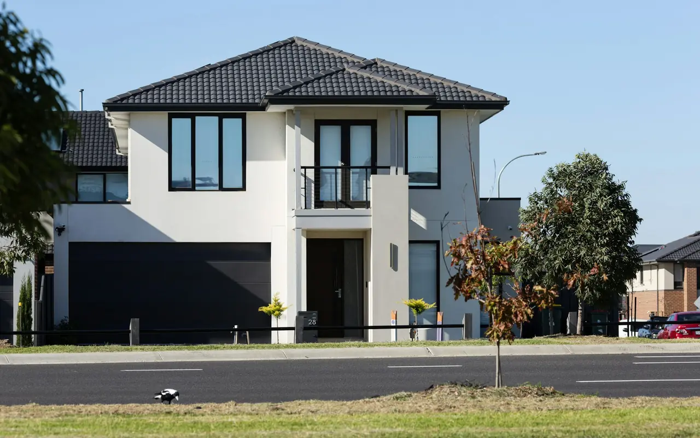

Woodmere NY · 11598 · Nassau County
Garage Door Repair Woodmere, NY
Same-day garage door repair throughout Woodmere NY 11598. Whether it's a torsion spring that snapped on a colonial off Broadway, a cable that let the door drop in a renovated contemporary, or an opener that stopped responding in a newer construction — we arrive the same day, fix it right, and back it with a written warranty. Free written estimate always.
- Same-Day Service
- Free Written Estimate
- Written Warranty
- Evenings & Weekends
Garage Door Service in Woodmere
Woodmere NY 11598 — A Community We Know Well
Woodmere is one of the larger Five Towns communities — a well-established neighborhood where the housing stock runs the full range from the original postwar colonials and split-levels on the streets north of Broadway to larger, newer, and substantially renovated homes on the southern residential streets. This diversity in home age and style creates a corresponding diversity in garage door situations.
Older Woodmere homes: hardware past its design life
On the older residential streets of Woodmere, we frequently encounter doors and hardware that have been in service since the 1970s or 1980s — often with a spring replacement somewhere along the way but original cables, rollers, and tracks that are well past their design life. These systems often give warning before they fail: grinding from dry rollers, a door that feels heavier than it used to, or a spring that shows visible rust and coil separation. We identify and address these warning signs during service calls.
Renovated Woodmere homes: finished ceilings and wall-mount openers
On the renovated and newer Woodmere properties — particularly those where owners have finished the garage ceiling for additional storage or living space — the standard overhead rail opener creates a problem. The LiftMaster wall-mount opener is the right solution here: it mounts on the wall beside the door rather than on a rail above it, eliminating the overhead obstruction entirely. This is one of the most common installer calls we receive in Woodmere.
Salt air: present, but not at waterfront levels
Woodmere sits far enough from the direct waterfront that standard galvanized hardware performs normally. Salt air from the South Shore is present but not at the concentration levels seen in Lawrence and Inwood. Annual lubrication and inspection is appropriate for most Woodmere properties.
Woodmere Renovation Note
If you've renovated your Woodmere garage — finished ceiling, overhead storage, or converted space — and your existing opener rail is now in the way, a LiftMaster 8500W wall-mount installation eliminates the problem entirely. No rail overhead means the full ceiling is yours. We install wall-mount openers throughout Woodmere same day with a free written estimate. Call (516) 490-0931.
| Torsion Spring Replacement | $295 |
|---|---|
| Extension Spring Replacement | $145 |
| High-Cycle Spring Upgrade | $380 |
| Cable Replacement (both) | $125 |
| Nylon Roller Upgrade | $35/roller |
| Track Realignment | $175 |
| Opener Gear Kit | $130 |
| Wall-Mount Opener Install | Call |
| Safety Sensor Repair | $75–$150 |
| Annual Tune-Up | $99 |
| Written Estimate | FREE |
Starting prices. You receive a free written estimate before any work begins.
(516) 490-0931 — Same DayServices in Woodmere NY 11598
What We Repair & Install in Woodmere
Spring Repair
Torsion and extension spring replacement same day throughout Woodmere. Older Woodmere homes frequently have springs that are at or past their design life — visible rust and coil separation are the warning signs. We carry springs for every standard opening size and offer high-cycle upgrades for high-traffic attached garages.
Wall-Mount Opener Install
For Woodmere garages where the ceiling is finished, used for storage, or has low clearance — the LiftMaster 8500W wall-mount eliminates the overhead rail entirely. Direct-drive mechanism is the quietest opener available. Battery backup included. Popular in Woodmere renovations where overhead space has been reclaimed.
Carriage Door Installation
Carriage house garage doors are the most requested new door installation in Woodmere — matching the colonial and craftsman homes throughout the community. Steel carriage house in composite overlay or standard embossed steel, with decorative hardware that matches the home's exterior. Free in-home estimate with no obligation.
Cable & Roller Repair
Cable replacement and nylon roller upgrades same day throughout Woodmere. Older Woodmere homes often have original metal rollers that have been dry and grinding for years — the roller upgrade eliminates the noise and reduces wear on the tracks significantly. Both cables always replaced simultaneously regardless of which failed.
Opener Repair
Same-day opener repair throughout Woodmere. Stripped gear and sprocket — motor runs but door doesn't move — is the most common opener failure in Woodmere. We stock gear kits for all major brands on every truck. Sensor realignment, remote programming, and logic board replacement also handled same day.
Annual Tune-Up
Annual 22-point inspection and service for Woodmere homes. Fall timing is ideal — the door faces its hardest season after the tune-up and arrives at spring in good condition. Full lubrication, hardware tightening, safety tests including auto-reverse and sensor alignment, and written condition report with upcoming service recommendations.
Homeowner Guide
Keeping a Woodmere Garage Door Healthy
What we see most often on Woodmere service calls — and what you can watch for between visits.
Know the Warning Signs
Older Woodmere systems usually warn you before they fail. Call for service if you notice:
- Grinding or scraping from dry metal rollers
- A door that feels heavier than it used to
- Visible rust or gaps between spring coils
- Frayed or rusted lifting cables
Service Once a Year — in the Fall
Because Woodmere sits back from the direct waterfront, annual lubrication and inspection is appropriate for most homes. Schedule it in the fall so the door goes into winter freshly lubricated, balanced, and safety-tested. Between visits, keep the photo-eye sensors at the bottom of the opening clean and aligned — a bumped sensor is a common reason a door reverses before it closes.
Quiet Openers & Storm Backup
Many Woodmere colonials have bedrooms directly above an attached garage — a belt drive opener runs far quieter than chain drive. Parts of Woodmere share the South Shore's storm-season power outages, so we recommend an opener with integrated battery backup, so you're not pulling the emergency release in the dark.
Broken Spring or Snapped Cable?
Stop using the door. A door with a broken spring or cable can fall suddenly without warning — don't operate the opener or try to lift it by hand. Call us at (516) 490-0931 for same-day garage door repair.
Woodmere Garage Door FAQ
Questions from Woodmere Homeowners
Straight answers to what Woodmere NY 11598 homeowners ask us most. More in our garage door FAQ.
Who repairs garage doors in Woodmere NY?
Five Towns Garage Door provides same-day garage door repair throughout Woodmere NY 11598. Call (516) 490-0931 any time — evenings, weekends, and holidays included. We typically arrive within 2–4 hours, call 30 minutes before arrival, and provide a free written estimate before any work begins.
How much does garage door repair cost in Woodmere NY?
Extension spring repair starts from $145. Torsion spring replacement starts from $295. Cable replacement from $125. Free written estimate before any work begins. Call (516) 490-0931.
I finished my Woodmere garage ceiling — can I still install an opener?
Yes — the LiftMaster 8500W wall-mount opener is exactly the solution for Woodmere garages with finished ceilings, storage ceilings, or low clearance. It mounts on the wall beside the door, requires no overhead rail — freeing the full ceiling — and is the quietest opener we install. Battery backup and MyQ smart connectivity are included. It's popular in renovated Woodmere homes and new construction. We install wall-mount openers same day in Woodmere with a free written estimate. Call (516) 490-0931.
What is the most popular garage door style in Woodmere NY?
Carriage house style garage doors are the most requested installation in Woodmere — particularly for the colonial and craftsman homes on the residential streets north and south of Broadway. Steel carriage house doors with deep wood-grain embossing in composite overlay look virtually identical to real wood without the maintenance. Decorative hardware in oil-rubbed bronze or black iron completes the look. Free in-home estimate. Call (516) 490-0931.
My Woodmere garage door is very noisy — what causes it?
The most common cause in Woodmere's older attached garages is worn metal rollers running dry in the tracks. The steel ball bearings wear out, the rollers drag instead of rolling, and the friction creates grinding and scraping noise. Upgrading to sealed nylon ball-bearing rollers eliminates the noise and dramatically reduces track wear. In many cases, adding a roller upgrade to a service call takes 20–30 minutes and makes an immediate difference. Call (516) 490-0931.
Do you work evenings and weekends in Woodmere?
Yes — available evenings, weekends, and holidays throughout Woodmere NY 11598. Garage door problems don't follow business hours. Call (516) 490-0931 any time — a real technician answers and we dispatch the same day.
Also Serving
Other Five Towns We Service
Google Reviews
What Customers Say
4.7 out of 5 stars from 15 Google reviews (as of September 2026). Reviews are quoted as written.
My opener's lift chain completely derailed from the gear assembly, leaving our SUV totally trapped inside the bay. The tech arrived with all the correct replacement garage door parts right inside his work vehicle to fix the mechanism. He re-aligned the motor assembly and completed the entire garage door repair so we could finally get out of the house.
The technician did a great job to fix my garage door ! I appreciate his recommendation to replace the one coil and to replace the cable too. he was effcient and fast, and polite. I was hesitant at first because of the additional cost, but he spoke to me safert issues are first! Thank you for a job well done !
I live in Oceanside, and I was in the market for a new garage door. I shopped around and came across Five Towns Garage Doors. Not only did they give me a good deal, but they were prompt, professional and extremely helpful. They showed up when they said they would and did a great job. If anyone is looking for a garage door, do not hesitate, call Five Towns Garage Doors!
Garage Door Repair Woodmere NY 11598
Same-day service · Carriage house specialists · Wall-mount opener installations · Free written estimate · Evenings & weekends